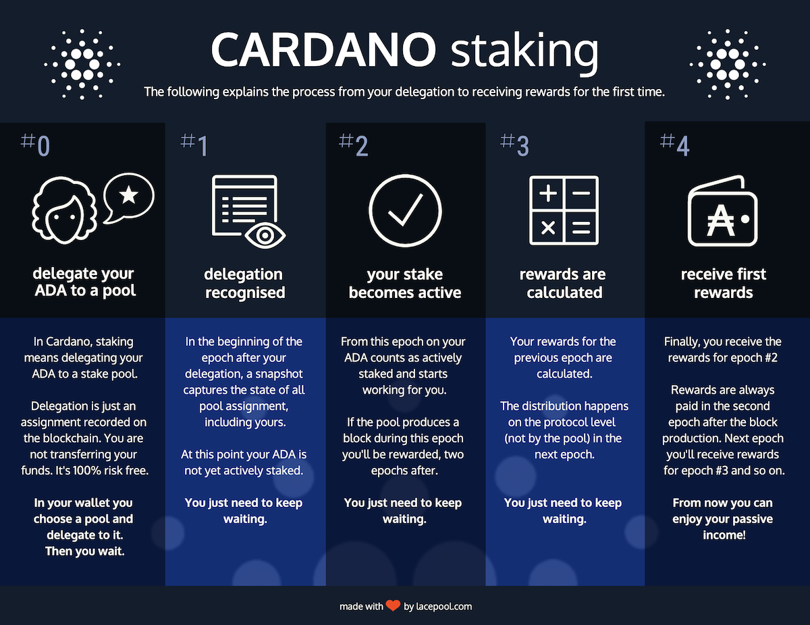

ADA staking
Staking is a win-win for you and the Cardano network: it generates passive income for you and supports the decentralization effect in the Cardano network.
If you own ADA, you can start staking. You will receive rewards (in ADA) that are paid every epoch (5 days).
The only thing you need to do is keep your ADA in a wallet that supports staking. The most popular ones are the Daedalus and Yoroi wallets. For security reasons, never leave your ADA on an exchange for an extended period of time.
In your wallet you choose a stake pool from the list and delegate your ADA. This is 100% risk-free as delegating is like an assignment but you're not transferring your ADA to anyone. Your ADA assets stay safe with you in your wallet and you can still use them at any time.
Note: A deposit of 2 ADA will be paid. This ensures that you can pay the transaction fees for paying out rewards even if your wallet is completely empty. Redelegation does not require another deposit, but be aware it is a transaction and you'll pay a transaction fee.
If you are delegating your ADA for the first time and want to understand when to expect the first rewards, please check out the following graphic.
Open Source Software Fund
Almost everyone uses Open Source Software on a daily basis. What many people don't know: Those who develop tools millions of us use every day are often volunteers.
This fund is supposed to support the people behind Open Source Software projects and to incentivize new people to join them.
Every month 25% of the stake pool's net profits are moved over to the fund. There is no disadvantage for you as it doesn't lower your rewards.
Currently, allocation of the funds is a curated, continuosly reviewed and adjusted process. In the future smart contracts will supersede this manual work.
The funds are payed out to the projects through GitHub sponsors as recurring, monthly donations.
Following projects are considered to receive donations from the fund as soon as it has grown to a valuable size.
| Name | Description | Website |
|---|---|---|
| curl | The curl project makes curl and libcurl. One of the world's most widely used software components. | https://curl.se |
| OpenSSL | OpenSSL is a robust, commercial-grade, and full-featured toolkit for the Transport Layer Security (TLS) and Secure Sockets Layer (SSL) protocols. It is also a general-purpose cryptography library. The OpenSSL project relies on funding to maintain and improve OpenSSL. | https://www.openssl.org |
| Homebrew | Homebrew is an open-source, free package manager for macOS, Linux and Windows 10 (with the Windows 10 Subsystem for Linux). Homebrew is a non-profit project run entirely by unpaid volunteers. | https://brew.sh |
| Tor | Tor is free software and an open network that helps you defend against traffic analysis, a form of network surveillance that threatens personal freedom and privacy, confidential business activities and relationships, and state security. | https://www.torproject.org |
New Projects
Everyone can propose OSS projects that should benefit from the fund. For now, simply send a tweet with your proposal mentioning the GitHub URL and @lacepool_com. It'll be checked and it might be added to the list.
Project Selection
Proposals are judged on how well they fulfill eligibility criteria
- must be open source on GitHub
- must be underrepresentedly funded
- must have GitHub sponsors enabled
- should embrace a code of conduct (e.g. from Contributor Covenant)
About

Hi, I am Robin – a professional and passionate software developer with a strong background in Linux systems administration, for around 2 decades. I love building software that delights.
I believe the Cardano blockchain technology and it's community will change the world as we know it today. Operating a stake pool means I can contribute to the Cardano network and play an active role in it.
Pool details
All nodes are running on Ubuntu machines with 16GB RAM and 4 CPU cores. They communicate through a private network and only the relays connect to other peers in the Cardano network shielding the block producing node.
Lacepool's keys were securely created in an air gapped environment, encrypted and have been kept in a safe place ever since.
The servers are located in a highly secure and professional datacenter in Frankfurt, Germany. The provider is known for its excellent cloud computing services and since the deployment of the nodes is based on Docker, scaling server resources vertically and horizontally is a breeze.